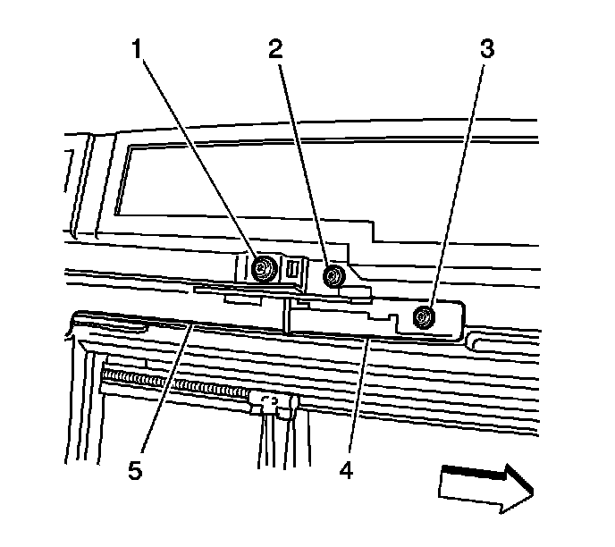
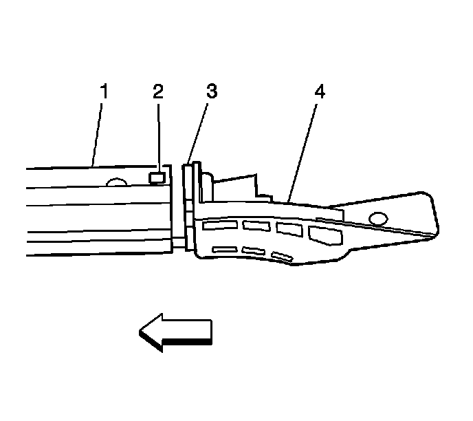

Sunroof Guide Replacement
Sunroof Guide Replacement
Removal Procedure
1. Remove the front, center, and rear vent windows. Refer to Sunroof Window Replacement (Front) (Service and Repair)Sunroof Window Replacement (Rear Vent) (Service and Repair)Sunroof Window Replacement (Center) (Service and Repair)Sunroof Window Replacement (Rear Stationary) (Service and Repair) .

2. Remove the front window rear track extension (4) screws (2, 3).

3. Remove the front window rear track screws (1) on either the right of left side track.
4. Remove the front window rear track from the vehicle.
5. Remove the front track extension from the track.
6. Remove the sunroof guide (2) from the track.
Installation Procedure
1. Install the sunroof guide (2) into the front window rear track channel.
2. Slide the guide rearward into the track.

3. Install the front cam extension (4) to the front window rear track (1).
4. Position the track to the sunroof frame.
5. Measure the distance, side-by-side, to ensure the front window rear tracks are parallel.
Notice: Refer to Fastener Notice (Fastener Notice) .
6. Install the track screw.
Tighten the track screws to 5 N.m (44 lb in).
7. Install the front cam extension screws (3, 5).
Tighten the screws to 5 N.m (44 lb in).
8. Position the guide (2) even with the other track in order to install the front window.
9. Install the front, center, and rear vent windows. Refer to Sunroof Window Replacement (Front) (Service and Repair)Sunroof Window Replacement (Rear Vent) (Service and Repair)Sunroof Window Replacement (Center) (Service and Repair)Sunroof Window Replacement (Rear Stationary) (Service and Repair) .